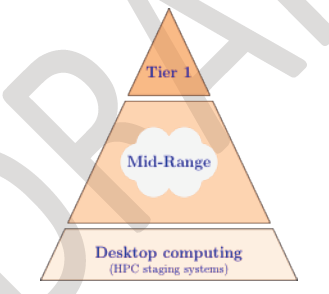

Compute Canada's 'Strategic' Plan Isn't
Last Friday–December 17–I received an email from Compute Canada. The emphasis is mine:
A Strategic Plan for Compute Canada was a key recommendation of the International Review Panel. This plan draws on suggestions from that panel as well as the information and discussions from the Town Hall Meetings held earlier this year. It has been many months in preparation and review by Compute Canada's committees and must be submitted to CFI before the end of December 2010… Your comments are invited and should be sent…by end of day Monday, December 20th.
Call me cynical, but I have to wonder how much feedback they really want if they're sending out more than 50 pages on the Friday of the weekend before Christmas, and insisting on replies by Monday… The plan itself is an even bigger disappointment. It is supposed to lay out the next decade's goals for the entire Canadian HPC community, but of the six goals listed in the executive summary, only one talks about people (or in government terms, "highly qualified personnel"), and the "Implementation Strategy" given is as vague as it could possibly be: "Work with universities to develop HPC support expertise and train researchers to use HPC effectively and efficiently." Sections 4.1.4 and 9.1.4 are equally vague–the latter acknowledges that "The key 'product' academia provides to businesses is Highly Qualified Personnel", but the only concrete plan I see is decoupling funding for people from funding for hardware. Again, call me cynical, but I expect that will result in less money for the former, not more…
Nowhere do I see any mention of what matters most: giving scientists and engineers the foundational computational skills they need to use computers effectively–all kinds of computers, of all sizes. Big computers are vital pieces of experimental apparatus, and as the biggest line items in Compute Canada's budget, the priorities for choosing them need to be stated (and argued for). Without skilled people, though, those fancy machines just space heaters with blinking lights. The best way to see what Compute Canada's Strategic Plan should focus on is to redraw their tired old pyramid to show what things really look like:
|  | Compute Canada's Pyramid |
 |
Reality |
If Compute Canada really wants to help academia and industry use high-performance computers more effectively, the picture on the right is the one that matters. If changing that doesn't become their #1 priority, the gap between what Canadian scientists and engineers can do and what they could do will continue to grow, to the detriment of all.